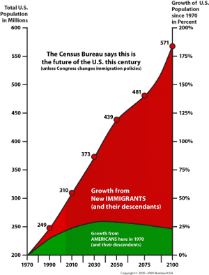

< < < Back
How Mass Immigration Is Driven By Female Consumerism And Low Fertility – Return Of Kings
A recently released report reveals that a full in 1 in 5 people in the United States are now either immigrants or their children. The growth of the immigrant population has been occurring at a rate of over 350% since 1965. This tidal wave of immigration has inundated the traditional American population, who have been asleep at the switch thinking that having children is either déclassé or an antiquated notion. As a result, they are being demographically replaced in their own nations.
While illegal immigration is a valid issue, it is a scare tactic used by political elites to drive the construction of the police state security apparatus. In reality, legal immigration is a much bigger problem. Yet, the political class on both sides of the aisle have been calling for an even bigger increase of legal immigration. Of the now 61 million people that are immigrants or their children in the United States, a whopping 75% are here legally because of both the Immigration Act of 1965 and the Immigration Reform and Control Act of 1986.
The Consumerism Machine
In order to keep a consumption economy that needs perpetual growth running, the political and economic powers in our society need an ever-increasing population. Declining populations are correlated with recessions and depressions while growing populations are correlated with economic growth. But is continuing to feed a machine that expects perpetual growth with warm bodies worth the costs? The West has lost its culture and is losing its entire society at the altar of consumerism, which has brought about demographic replacement because of radical feminism.
Part of the reason the United States and Europe are importing so many immigrants is feminism has rendered white women statistically sterile. Birth rates are not enough to even sustain the population, much less create an engine of economic growth.
Yes, that’s a dog in that baby carriage and not a child
Feminism encourages women to forgo their biological roles as mothers and to forgo forming families. In the modern age, Western women now marry themselves to a corporation rather than to a strapping young man. As a result, the white population continues to wither away and die in America and in Europe and be demographically replaced. Tragically, women are now looking for child replacements like cats and dogs to silence their maternal instincts.
The Numbers
Women refusing to have families and children requires the flood gates of immigration to be swung open because a consumer economy needs increasing numbers of warm bodies to buy its wares. The effects are illustrated in the graph from NumbersUSA below. Low fertility and mass immigration are leading to irreversible demographic change in the United States and Europe. The proportion of immigrants is only expected to rise this century.
It is easy to see how this will cause further division among the already polarized American populace. The specter of further polarization rings especially true when combined with a political system that operates through division, dividing people up into ever more splintered groups and subgroups that then compete with one another for government affection and gibsmedats.
Of the nearly 600 million people in the U.S. by 2100, only 250 million or less will be descended from Americans who did not immigrate to the country after 1970. Real demographers knew the world we are in now was coming decades ago, but nothing was done to avert replacing traditional Americans with immigrants.

Americans of all ethnicities, with family who lived in the country before 1970 are increasingly becoming strangers in their own culture to feed perpetual economic growth
It seems in today’s world, destroying national sovereignty and cultures to turn people into shopping fools is an acceptable strategy by government in service of the corporate bottom line. This idea is nothing new, as it was developed into a screenplay 40 years ago in the 1976 drama Network:
You are an old man who thinks in terms of nations and peoples. There are no nations. There are no peoples. There are no Russians. There are no Arabs. There are no third worlds. There is no West. There is only one holistic system of systems, one vast and immane, interwoven, interacting, multivariate, multinational dominion of dollars. Petro-dollars, electro-dollars, multi-dollars, reichmarks, rins, rubles, pounds, and shekels.
Two generations later, the warnings in this film ring truer than ever when it comes to the world populace being placed into an figurative ethnic blender in service of an economic waste machine. Cultures are lost, nations are lost, but people can buy lots of shiny things they do not need.
Free Market

The need for mass immigration to the West has been caused by feminism, and feminism was designed by a collusion of corporate and government interests to take women out of the home and turn them into corporate cogs and taxpayers. The rise of corporate monopolies and the disproportionate power they (using their government servants) exert over the lives of the average person is a corruption of the free economic market.
In a free-market economy, prices for goods and services are set freely by the forces of supply and demand and are allowed to reach their point of equilibrium without intervention by government policy, and it typically entails support for highly competitive markets and private ownership of productive enterprises.
That said, Adam Smith himself warned about the dangers of a completely unregulated market. Smith knew that a completely unregulated market would see the rise of monopolies (like today’s corporate monopolies) and was therefore not free. Government imposition is a dangerous thing when it comes to economies, but it is sometimes necessary. The problem is instead of preventing monopolies as it should, the government has aided and abetted them.
One of the problems created by the unchecked consolidation of corporations, in addition to the issue of converging interests corrupting government and subverting the will of the people on matters like immigration, is wage gutting.
The left blames corporations while the right blames the government, when in reality the two interests work together to subvert the will of the people
Wage Gutting
Corporate interests support increasing legal immigration even further, which has one major benefit for them: cheap labor.
One of the biggest pushes in the past few years has been to drastically increase the number of legal foreign workers in the United States. Executives like Mark Zuckerberg are calling for major increases in the H1B “temporary” worker visa program. This is because of a supposed tech worker shortage. However, the idea of a tech worker shortage has largely been created out of whole cloth by Zuckerberg and his ilk in Silicon Valley. Even the Atlanta Journal-Constitution, a legacy media newspaper pointed out the hypocrisy of the tech industry’s claims:
When compensation in these fields is declining, along with benefits and security, bright students understandably look elsewhere for their future. Companies then use the predictable data to create a doomsday scenario to justify expanding the number of H-1B visas.
It’s a vicious circle.
So no, Zuckerberg, there is no true tech worker shortage. There is a shortage of citizens willing to work for third-world wages in the United States.
This is yet another example of the corporate-government complex at work. The tech industry doesn’t want to pay workers what they are worth, so they lobby Congress for increasing immigration to suppress wages. The government then enacts immigration laws and regulations favorable to the tech industry, shafting the American citizen.
Executives like Zuckerberg also claim to be champions of the environment. However, in addition to unchecked immigration destroying national sovereignty, it also harms the environment.
Environmental Impact
If the powers that be really wanted to save the planet, they would not be demographically replacing populations of Western nations to feed the consumerism waste machine.
4 out of 5 purchasing decisions are made by women, driving 80% of consumerism
As pointed out in my previous article on Global Warming or Global Government, women are responsible for 80% of the consumer economy in the United States. A full $1.2 trillion of this spending is on non-essential goods; things people do not really need.
As Stefan Molyneux has pointed out, if there was truly an effort to end overconsumption to solve the problem of global warming (not to mention the other issues mentioned above) world leaders would be saying the following about fiat currency and central banking:
We must end fiat currency, we must end central banking around the world. Because central banking and the continued overprinting of currency and the taking on of national debt is causing a vast overconsumption of nature’s scarce resources. [This] should be the central and fundamental and irrefutable argument for ending central banking and returning to a gold standard.
In short, fiat currency causes overconsumption. The need for fiat currency is caused by an economy that caters to women, who make 4 out of 5 purchasing decisions in a consumerism-driven waste economy. And the economy is supported by population growth which is no longer occurring in traditionally white nations since the feminist movement. It’s the perfect storm.
There have been warnings going back thousands of years in Western literature about the societal costs of not giving women proper direction. This is perhaps illustrated nowhere better than this type of economy cannibalizing Western civilization. Proverbs 31:3 is a good example of this ancient wisdom:
Do not give your strength to women, your ways to those who destroy kings.
Men Failed As Guardians
Men really have only ourselves to blame (and our parents and grandparents for not stopping the snowball before it started.) First, for letting women run wild and second for not keeping liberalism in check. As pointed out in a recent Chateau Heartiste article:
Conservatives need liberals for their creativity and (usually) aesthetic lifestyle sensibilities. Liberals need conservatives for their guardianship and wisdom. Too few liberals, and conservative society can become static and self-satisfied. Too few conservatives, and liberal society can become self-destructive.
In this view, conservatives are the more crucial linchpin to civilization. Without liberals, we might have worse movies and fewer charming coffee shops. But without conservatives, we might have no civilization at all, having handed over the keys to the White kingdom to babbling barbarians.
In normal historical cycles, the warrior would ascend in times of decadence and social disconnection to bring balance to the force. But these are not normal times. Feminism, the ideological spawn of Satan and his thousand reptilian succubi, thwarts the natural ascendancy of the warrior class, allowing the shitlib devolution to continue unhindered and unchecked.
The so-called Greatest Generation rolled the dice one too many times when they let the government construct the welfare state, promulgate radical feminism, and open the door to unchecked immigration in the hopes it would bring about a sort of Utopia. As Stanford University economist Thomas Sowell points out:
Much of the history of the Western world over the past three decades has been replacing what worked with what sounded good.
This really only leaves a couple of hanging questions. Although they’re questions that when answered will tie up all the loose ends of the societal degradation and tidal wave of immigration we are witnessing.
Is the self-destruction of Western society occurring purely organically, as Spengler predicted…or is it occurring because of (or perhaps accelerated by) forces that while not directly conspiring, do have vested interests in preserving their power and wealth which are antithetical to the interests of the citizens they are sworn to serve? And, how does one balance economic growth with the desire to maintain the integrity of a sovereign nation?
Read More: Leftists Go Crazy Over Donald Trump’s Call To Ban Muslim Immigration